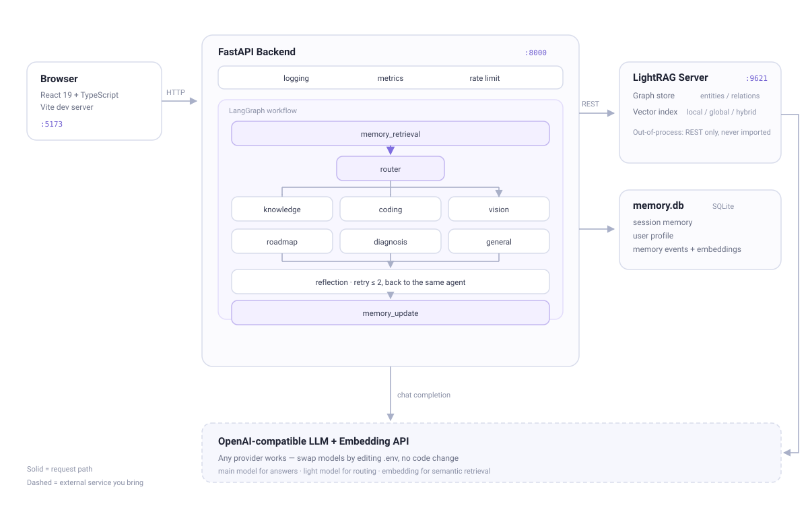

Most RAG demos stop at retrieve-then-answer. memory-agent routes each question to a specialised agent, keeps a three-layer memory of who you are, and turns a topic into a tracked learning roadmap — degrading gracefully when a dependency goes down.
Six agents — knowledge, coding, vision, roadmap, diagnosis, general — with keyword fallbacks so intent-critical requests are never misrouted.
LightRAG builds an entity/relation graph behind a REST boundary. Local, global and hybrid retrieval, with automatic fallback to plain LLM answers.
Semantic similarity + character-bigram keyword coverage + importance + time decay. Re-phrased preferences collapse into one record; contradictions supersede the old one.
Turn a topic into a validated 5–10 step plan you can tick off, then ask how you are actually doing and get strengths, weak spots and next steps.
A quality gate retries weakly grounded answers — and returns to the originating agent instead of silently rerouting to knowledge search.
No vector store? Keyword retrieval. No embedding API? Redistributed weights. Every external dependency has a documented fallback path.

# 1. install
git clone https://github.com/007350/memory-agent.git
cd memory-agent && python -m venv .venv
source .venv/bin/activate # Windows: .venv\Scripts\activate
pip install -r backend/requirements.txt
pip install "lightrag-hku[api]==1.5.6"
(cd frontend && npm install)
# 2. configure — any OpenAI-compatible LLM + embedding endpoint
cp backend/.env.example backend/.env
cp lightrag/.env.example lightrag/.env
# 3. run
./start.sh # Windows: start.bat
# → http://localhost:5173
Docker users: docker compose up. Full options in the
README.
| Category | Score | What it checks |
|---|---|---|
| Simple QA | 10/10 | single-document recall |
| Cross-document | 10/10 | combining two sources |
| Multi-hop | 5/5 | chained reasoning over the graph |
| Unanswerable | 5/5 | refusing when the corpus has no answer |
30 questions · 7 documents · retrieval hit rate 96% · average latency 27.4 s. Numbers are a regression guard, not a benchmark.